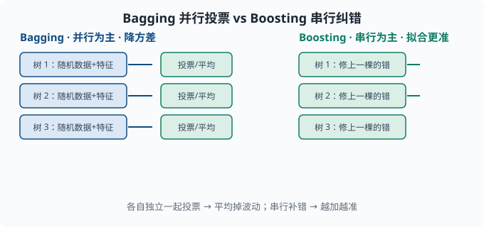

树与集成：表格数据的常胜模型
目标：理解为什么"很多树的投票"常比"一棵好树"更强。读完这一页，你能解释决策树怎么分裂、随机森林与 GBDT 的区别、它们如何降低偏差与方差，并知道表格数据上该往集成模型靠。
为什么学树与集成
线性模型（03-02）很可解释，但捕捉不了复杂的非线性结构。深度学习（04 章）很强大，但表格数据上未必最适合。决策树及其集成在结构化/表格数据上长期是场上主角——它们对特征尺度不敏感、能捕捉非线性、且常常不需要大量精心调参。
一个关键心态：
单棵树容易"记太死"或"记太粗"；与其纠结一棵完美的树，不如让一大群各不相同但都还不错的树投票，平均下来往往更强、更稳。
一棵决策树：向下的提问链
决策树通过一连串"if-else"式的提问把样本分到叶子：
是否收入 > 5万？
├─ 是：是否有房？
│ ├─ 是 → 批准贷款
│ └─ 否 → 看信用分 > 600？ → ...
└─ 否 → 拒绝贷款
每个内部节点问"某个特征是否满足某个条件"，把数据往左右分；叶子节点给出最终预测（分类给多数类，回归给均值）。
flowchart TB
R["收入 > 5 万？"] -->|"是"| H["是否有房？"]
R -->|"否"| N["拒绝贷款"]
H -->|"是"| A["批准贷款"]
H -->|"否"| C["信用分 > 600？"]
C -->|"是"| A2["批准贷款"]
C -->|"否"| N2["拒绝贷款"]
怎么选"问哪个、怎么分"
节点分裂的目标是让分出来的子集更纯（同类别更集中）。分类树用不纯度衡量（不纯度 = "一个节点里类别混杂的程度"，越混越不纯）：
Gini 不纯度 = 1 - Σ p_i²
熵 Entropy = -Σ p_i·log(p_i)
其中 p_i 是子集中第 i 类占比。两者在"全体同一类"时都是 0（最纯），在"各类均匀"时最大（最乱）。（熵正是 01-05 信息论 里"不确定度"的度量，在这里被借来数"节点里有多乱"。）做分裂时，选择"分裂后不纯度下降最多"的特征和阈值。
决策树的优势：特征间有交互也能表达（比如"收入和是否有房同时决定"），不用手动造交互特征；无需特征标准化。但它单棵容易：
- 过拟合（树太深就背数据）。
- 不稳定（训练数据略变，树结构大变，方差大）。
这正是集成要解决的。
集成：很多模型的智慧
"三个臭皮匠顶一个诸葛亮"在机器学习里是真的。把很多略弱的模型组合起来，往往比单个强模型更稳，这种组合就叫集成（ensemble）。两类主流：
- Bagging（并行）：并行训练很多模型，结果投票/平均 —— 典型是随机森林，主要降方差。
- Boosting（串行）：逐个训练，每个专注纠前面错了的样本 —— 典型是 GBDT/XGBoost/LightGBM，既能降偏差又能降方差。（GBDT = 梯度提升树，原理见下节；XGBoost、LightGBM、CatBoost 是它在工程上的三个高速实现。）

左边 Bagging 让各树独立、一起投票，方差被平均掉；右边 Boosting 一棵接一棵地修上一棵的错，预测越加越准。
随机森林：Bagging + 随机特征
随机森林训练很多棵决策树，但每棵只：
- 用随机重采样得到的训练子集（bootstrap——有放回地随机抽同样多条数据，于是每棵树看到的是一份略有差异的"翻版"训练集）。
- 每次分裂只看随机挑的一部分特征（而不是全部）。
这制造了树的"多样性"：每棵看到的数据略不同、能用的特征略不同，于是各有所长、各有所偏，组合起来方差大降。预测时：
- 分类：所有树投票（多数表决）。
- 回归：所有树的预测取平均。
为什么"随机特征"重要？如果所有树都只看最强特征，它们会高度雷同，组合就没有意义了。多样性才是集成的力量来源——这和 03-04 的"降方差"直接对应。
GBDT：Boosting 纠错链
GBDT（梯度提升树，Gradient Boosted Decision Trees）走的是另一条路：串行地补偿错误。"提升"指的就是这种"一棵不够就再补一棵、逐级抬高"的思路；"梯度"指每棵新树拟合的是当前损失的负梯度方向（回归问题里恰好就是残差）。
- 先训练一棵树，得到预测。
- 算出它错在哪（残差/负梯度）。
- 训练下一棵树去预测这些残差，试图修正。
- 重复，把很多棵弱树相加成强模型。
最终预测 = f₁(x) + f₂(x) + ... + f_T(x)
关键区别：
- Bagging 重采样降方差，各树独立并平均。
- Boosting 聚焦错误，各树串行补偿、相加，能更精确拟合（对参数、学习率敏感，也更易过拟合）。
工程上 XGBoost、LightGBM、CatBoost 是 GBDT 的高效实现，加了正则化、直方图加速（把连续特征分桶成直方图再找分裂点，加速十倍以上）、缺失值处理，是 Kaggle（一个举办数据竞赛的著名平台）表格数据的主流工具。
与深度学习的对照
| 树/集成 | 深度学习 | |
|---|---|---|
| 最适合 | 结构化表格数据 | 图像、文本、序列 |
| 特征尺度 | 不敏感 | 常需标准化 |
| 数据量 | 中规模数据很有效 | 海量数据才显威力 |
| 可解释性 | 单树极好，集成较弱 | 弱（黑盒） |
| 捕捉非线性 | 内建 | 靠层与激活 |
在 agent 工程里，很多"简单决策"（该调用哪个工具、该不该继续）也可以用树/集成做快速基线；但文本理解的主力仍是深度模型。选型原则是数据形态决定模型。
动手：随机森林 vs 单棵 CART
（CART = Classification And Regression Tree，"分类与回归树"，即上面讲的那种"逐节点二分提问"的决策树的标准实现。）
from sklearn.ensemble import RandomForestClassifier
from sklearn.tree import DecisionTreeClassifier
from sklearn.model_selection import train_test_split
from sklearn.datasets import make_classification
from sklearn.metrics import accuracy_score
X, y = make_classification(n_samples=1000, n_features=20,
n_informative=8, random_state=0)
X_tr, X_te, y_tr, y_te = train_test_split(X, y, test_size=0.3,
random_state=0)
tree = DecisionTreeClassifier(random_state=0).fit(X_tr, y_tr)
forest = RandomForestClassifier(n_estimators=200, random_state=0).fit(X_tr, y_tr)
print("单树测试准确率:", accuracy_score(y_te, tree.predict(X_te)).round(3))
print("随机森林测试准确率:", accuracy_score(y_te, forest.predict(X_te)).round(3))
通常随机森林的测试表现比单棵满深度树好，因为它用多样性抑制了单树的方差。
思考题
- 决策树分裂的目标是什么？用什么衡量"纯不纯"？
- 随机森林为什么要"每棵树只看一部分随机特征"？
- Bagging 与 Boosting 的核心区别是什么？分别主要降偏差还是方差？
- 表格数据 vs 图像/文本，通常分别该优先考虑哪类模型？
参考答案
- 目标是让分裂后的子集更"纯"，即同一节点内类别更集中。用不纯度衡量：Gini 不纯度
1-Σp_i²或熵-Σp_i·log p_i，全同类别时为 0，各类均匀时最大；分裂选使不纯度下降最多的特征与阈值。 - 因为如果都用最强特征，所有树会高度雷同、失去多样性，平均起来就退化成不那么强的单模型。随机特征制造了各树的差异，集成才能靠"互补"显著降方差。
- Bagging 是并行独立训练、结果投票/平均，主要降方差（典型随机森林）；Boosting 是串行聚焦错误、相加补偿，既能降偏差（拟合更准）也需防过拟合（典型 GBDT）。
- 结构化表格数据通常优先考虑树/集成模型（不敏感特征尺度、捕捉非线性、中规模很有效）；图像、文本、序列等非结构化数据通常优先深度学习，因为它能自动学习层次化表示且海量数据时表现更好。
下一步
- 想在没有标签时发现结构 → 03-07 无监督。
- 想让模型事半功倍 → 03-08 特征工程。
- 想系统诊断为什么模型卡住 → 03-09 学习曲线与诊断。